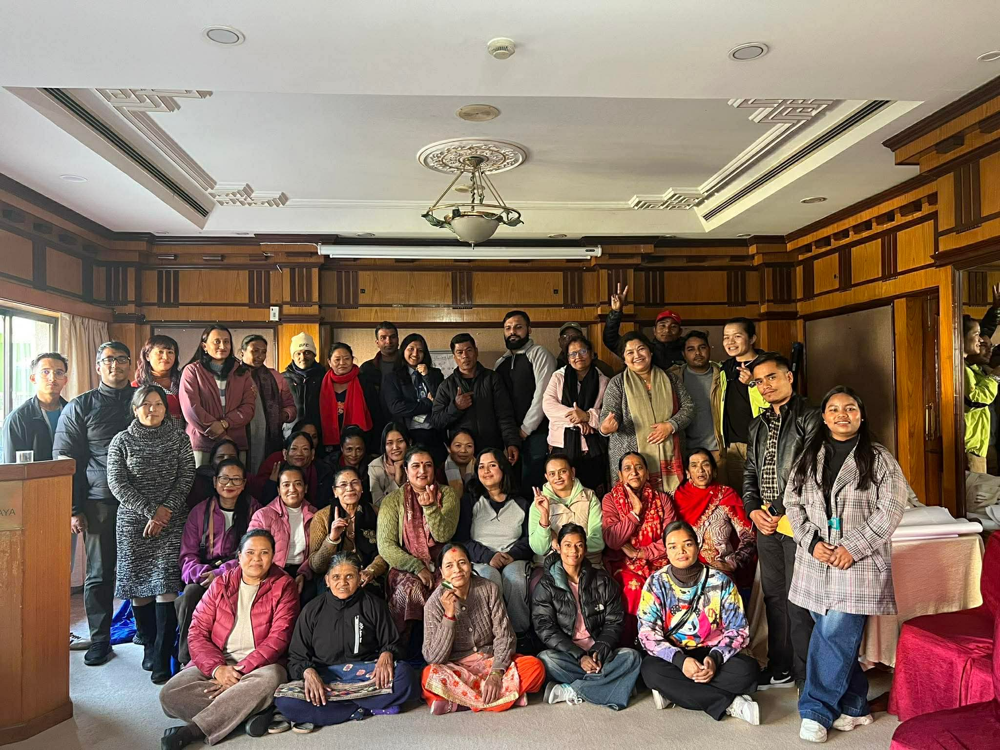
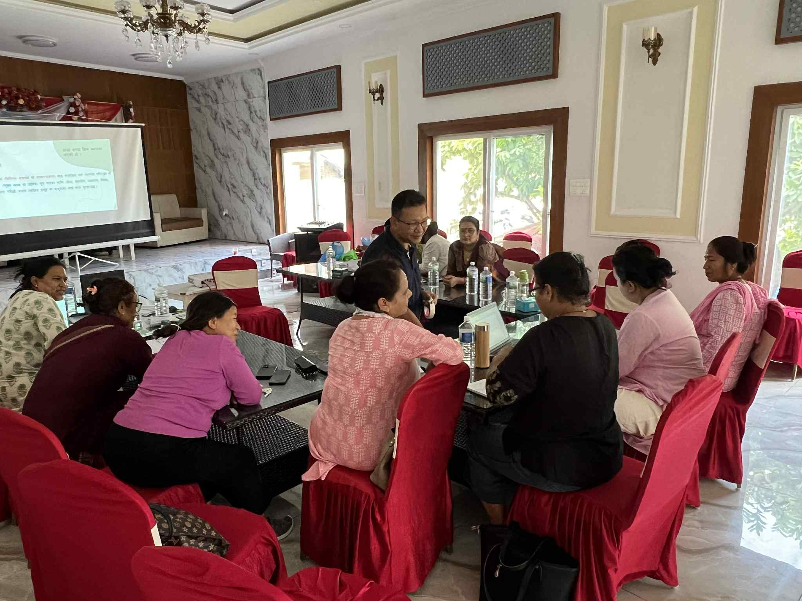
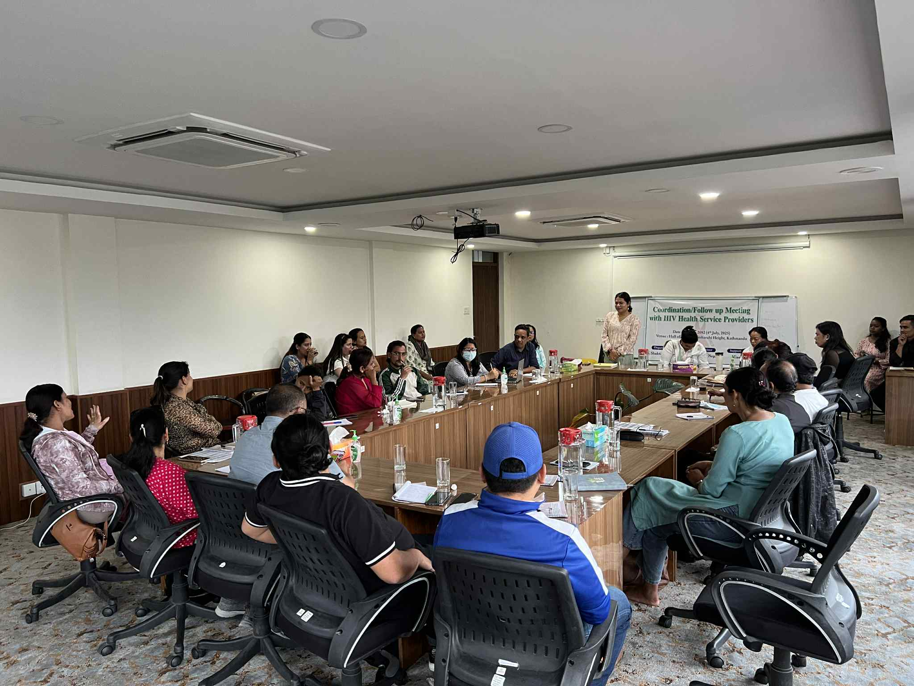
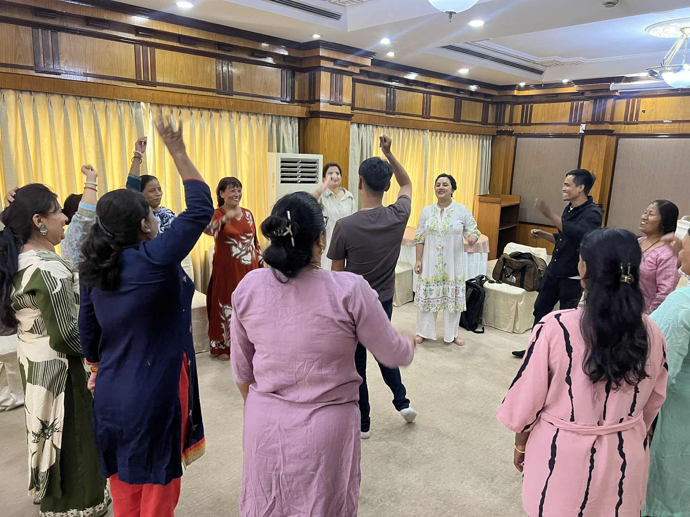

Recent achievements

SMS on 2nd April 2026 conducted a sensitization program with private sector
professionals on the experiences of violence, stigma and workplace harassment
faced by women living with HIV/AIDS, survivors of trafficking and victims of
gender-based violence.
The session covered important issues relating to the importance of adequate
formulation and implementation of corporate policies and the growing need for
collective action towards eliminating violence against women, especially at the
workplace.
We are grateful for such impactful facilitation by Sandhya Shrestha Ma'am.

Solidarity and collaboration for fueled oucome!
SMS recently conducted a sensitization program focused towards informing health
service providers about the experiences of GBV and issues faced by women living
with HIV while receiving health related services.
Special thanks to Dr. Sabin Thapaliya for impactful facilitation of the much
needed session.

Shakti Milan Samaj on 4th February 2026 conducted a coordination meeting with
respective health service providers and relevant stakeholders including local
government representatives and specialists regarding the service gaps in
HIV-related health services.
The discussion held great importance in realizing the need of shared effort and
response in mitigating the increasing number of HIV infection and gaps in terms
of access to adequate health related services.

SMS successfully conducted an interaction program with the beneficiaries and
their family members about the experiences of GBV by our HIV infected women.
We emphasized on the importance of meaningful and respectful communication
promoting peaceful interactions among family members so that our women feel
accepted and loved by their family members.

Shakti Milan Samaj successfully conducted an orientation program with health service providers about the recent updates and protocol regarding HIV/AIDS consultation and checkup. Dr. Sabin Thapaliya amazingly coordinated the session and remarked how abidance to protocols and universal standards contribute largely to ending stigma discrimination and unequal access for people living with HIV/AIDS.

Shakti Milan Samaj recently conducted a capacity building program with the important facilitation of Mr. Bhawani Psd. Dahal. We reviewed the VMGOs of Shakti Milan Samaj with adequate discussion on good governance, and importance of personality assessment of relevant members. We are committed to further the best interest of our organization and its members through adequate implementation of the learnings !

Glimpses from the recent coordination program conducted by Shakti Milan Samaj to receive follow-up updates and discuss on the recent developments and issues concerned with implementation of effective mechanisms to ensure that HIV infected individuals receive the best health-related services that we as stakeholders can offer.

This is for our caregivers; we see them, we see their strength and capacity to continuously show up to work, help uplift each other and build a better community for all. Realizing the importance of preserving our leaders' mental well-being, a self-care activity was implemented on 19th June 2025 with the help of Ms. Anuradha Acharya. The staff and board members have reported a positive shift in their mental well-being and overall health.

Glimpses from the stall we occupied on the occasion of World Environment Day. Very grateful for the vendors' and customers' response and feedback.